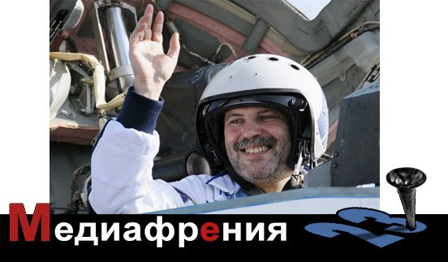

Медиафрения.Россия — провинция Китая № 23
Президент В.В.Путин объяснил, что обвальное падение рубля — это не только не плохо, а просто отлично, поскольку от этого растет российский бюджет.И правда, если год назад то, что мы продали за рубеж по цене 1 доллар, нам приносило 32,56 рублей, то сейчас, на момент написания данной колонки, приносит 47 рублей 39 копеек.А если нечто продали за 1 евро, то это уже целых 58 рублей 97 копеек, а не те жалкие 43,33 рубля, как было год назад.То есть, если считать в долларах, то россияне за год стали почти в полтора раза богаче.В евро, конечно, не так круто, но тоже неплохо: за год забогатели более чем в полтора раза.И ведь при этом палец о палец… Почему такой простой метод не используется всеми странами, можно объяснить только полным незнанием математики руководителями этих стран.
Есть подозрение, что президент заразился от альтернативно одаренного депутата Евгения Федорова, который месяц назад при обсуждении бюджета высказывал схожие мысли и тоже очень радовался санкциям, поскольку санкции лишат нас иностранных денег, а деньги мы ведь и сами совершенно спокойно можем напечатать.
И еще, как сообщили «Известия», Путин доволен атмосферой и результатами G20 в австралийском Брисбене.Трудно представить себе, что должно было произойти, чтобы Путин сказал, что ему не понравилась атмосфера или результаты.Когда президент России прилетел, его встретил заместитель министра обороны, то есть персона очевидно не из первого ряда австралийской политики.Присутствовавший в аэропорту генерал-губернатор Австралии, персона № 1, которая, хоть и формально, но все же олицетворяет верховную власть в этой стране, являясь главнокомандующим и тем, кто назначает премьера и правительство, так вот эта персона кочан своей головы в сторону российского президента не повернула, поскольку ждала лидеров Китая и Германии.
Зато канадский премьер, когда Путин подошел к нему для рукопожатия, заметил: «Руку я вам подам, но скажу только одно: убирайтесь из Украины».На традиционном коллективном фото Путина поставили с самого края, после лидера ЮАР.У человека, сформировавшегося в советской политической культуре, в которой место на трибуне Мавзолея было самым точным индикатором политического веса того или иного кремлевского старца, все эти и многие другие жесты, знаки, а так же открыто сказанные слова не могли оставить сомнений в том, что отныне он, Путин, в мировом сообществе — изгой.О том, что он это прекрасно понял, свидетельствует его бегство с G20 и неучастие в заключительной встрече, на которой принималась итоговая резолюция.В итоге Путин заявляет, что он удовлетворен атмосферой и результатами форума.Видимо, чтобы он сказал, что несколько разочарован, участники G20 должны были вооружиться битами и сообща прогнать его с форума.
Слова в исполнении Владимира Путина окончательно утратили функции единиц речевого общения и превратились в типичные метасигналы для невербальной коммуникации, характерной для животных.Вожак уверен и спокоен, гласит сигнал, адресованный популяции.Все под контролем, продолжаем спокойно пастись.А поскольку в нашем случае популяция пока еще довольно большая, то для транслирования метасигналов необходимы институты, которые многие по ошибке называют СМИ, и люди, которых ошибочно называют журналистами.
ЧТО, ОПЯТЬ В КАРАКОРУМ?КАК СЕМЬСОТ ЛЕТ НАЗАД?
Среди кремлевских пропагандистов есть такие, кто в силу физиологии и метаболизма совершенно оторвались от реальности и, не обращая на нее ни малейшего внимания, издают звуки, никак с этой реальностью не соотносящиеся.Таков ведущий Первого канала и по совместительству вице-президент Роснефти Михаил Леонтьев.Комментируя желание австралийского премьера задать вопросы Путину об Украине, Леонтьев заявляет: «Какой-то мерзавец Эбботт собирается жесткие вопросы задавать.А он не хочет получить жесткий ответ кулаком в харю?»А когда весь мир уже отсмеялся над той нелепой фальшивкой о сбитом Боинге, которую Леонтьев показал по Первому каналу, и журналистка «Эха Москвы» просто попросила телеведущего объяснить всем известные нестыковки, Леонтьев заорал: «Вы предъявите ваши данные, скоты!»Далее Н. Селиванова, ведущая «Эха», рискнула заметить, что в результате санкций пострадала не только Европа, но и Россия, у которой исчез экономический рост.Тут Леонтьев пришел в окончательное неистовство: «Экономический рост у нас исчез… Не надо!Давайте мы еще расскажем о том, что большевики убили царскую семью.Давайте!»После чего Леонтьев помянул Ивана Грозного и понес такую околесицу, что ведущей с трудом удалось завершить эфир и выпроводить гостя из студии.
Такой типаж с каждым днем все шире представлен в эфире, но некоторые пропагандисты все-таки испытывают дискомфорт от явного несоответствия того, что происходит в мире, и того, как ведет себя Россия и ее президент, загнавший страну в изоляцию.Приходится искать какие-то правдоподобные позитивные сценарии развития событий.Последние дни многие журналисты и эксперты стали старательно прищуриваться и хитро кивать куда-то за спину, туда, где, по их мнению, находится Срединная империя и откуда непременно придет спасение России.Исраэль Шамир в «Комсомолке» от 14 ноября опубликовал колонку под названием «Путин и Си слушают нас», в которой объяснил, что «со времен Сталина и Мао такого дуэта не было во главе Евразии».
Сергей Станкевич в «Известиях» в статье «Битва за Азию и шансы для России» от 16 ноября подвел под «китайский поворот России» экономический фундамент.Но наиболее развернутое, мировоззренческое обоснование слияния с Китайской империей дал журналист и философ Борис Межуев в колонке «Тихоокеанское спокойствие на фоне трансатлантических бурь».Как же журналист Межуев связывает все надежды с Китаем?Он считает, что «Запад убежден, что Россия не сможет быть надежным партнером Китая.Прежде всего, по культурным причинам».Межуев размышляет тут уже, видимо, как философ о том, что как только тысячи жителей столицы станут работать в фирмах, где начальниками будут китайцы, и китайские фирмы везде будут вытеснять европейские, начнутся разговоры о новом «татаро-монгольском иге», а там и до всплеска национализма недалеко.Одним словом, «русские побоятся оказаться внутри китайского геокультурного пространства, подобно тому, как евроориентированные украинцы побоялись оказаться внутри пространства российского».Конец цитаты.
Казалось бы все, тупик?Рухнула надежда прибиться под крыло к обильному южному соседу?Э, нет!Вы плохо думаете о философе Межуеве.Не такой он человек, чтобы оставить россиян без надежды.«России уже приходилось один раз совершать аналогичный выбор, — вспоминает Межуев.– И человек, олицетворявший этот выбор, является одним из самых почитаемых русских святых».Ох, как же вовремя вспомнил философ Межуев о св. Александре Невском, который надолго избавил Русь от европейского выбора, подложив ее на долгие столетия под Орду.Там еще, помнится, была такая славная процедура, когда многим поколениям русских князей приходилось ездить за тысячи верст в Каракорум за ярлыком на княжение, неделями, а то и месяцами ждать приема у хана, проползать через священный огонь и поклоняться монгольским идолам.Да, и к сведению г-на Гундяева, на кадровое утверждение в Каракорум ездили не только князья, но и митрополит с епископами.
Нет, современный Китай, конечно, совсем не то, что Орда.Это философ Межуев зря так уж нас принизил.Но то, что в отличие от Европы, где самые малые страны имеют равные права с большими, равноправных отношений с Китаем у России не будет, очевидно.Уважение к старшим и послушание — такова китайская традиция.Кто в предполагаемом союзе будет старшим, а кто младшим, надеюсь, ясно не только Сергею Станкевичу, но и даже Борису Межуеву.
ВЫБОР РОССИИ: МЕЖДУ 23-Й ПРОВИНЦИЕЙ И МАЛЕНЬКИМ ГВОЗДИКОМ В БОТИНКЕ
Большинство российских политических информационных и аналитических передач по связности и осмысленности информации напоминают детскую игру в «Чепуху».Помните, писали ответы на вопросы «кто?», «с кем?», «где?», «когда?», «что делали?», «чем кончилось?», потом каждый загибал листочек и передавал его по кругу.Иногда получалось смешно, иногда не очень, вроде такого: «Н.К. Крупская … с крокодилом … в аэропорту … после свадьбы … ловили мышей …(кончилось) Великой Октябрьской социалистической революцией».У Дмитрия Киселева тоже бывают удачные и, скажем так, проходные передачи.
«Вести недели» от 16 ноября были как раз из разряда проходных.Вот, например: «Как сегодня в Австралии водили хоровод вокруг России».Это именно про форум G20, с которого обиженный Путин уехал голодный домой без завтрака.Нет, ну что это за реприза, г-н Киселев!?С такими плоскими шутками вас ни в один цирк клоуном не возьмут.Это шутка для детей ползунков, которым няня на кота показывает и говорит: «Вот собачка!», а ребенок заливается от смеха, поскольку понимает, как с ним весело пошутили.Нет, г-н Киселев, так нельзя.Пора менять целевую аудиторию.
Или вот еще реприза: «Не мечтает ли Обама сбросить атомную бомбу на Кремль?»Стойте, стойте!Ведь только что, совсем недавно, Киселев Америку в радиоактивный пепел… Теперь вот, Кремль… Но здесь у Дмитрия Константиновича все намного серьезнее.Речь ведь о Кремле, а это ведь памятник архитектуры, не какая-то там Америка.Поэтому в этом случае Киселев запасся доказательствами и свидетелями.Главный свидетель против Обамы и его преступного умысла — это Черчилль.Тот самый, что со Сталиным в Ялте, потом он еще в Фултоне речь произнес.Черчилль Киселеву, конечно, сам лично ничего не сказал про Обаму.Зато про самого Черчилля написали в западной прессе.Оказывается, слился некий агент ФБР, который знал про некоего сенатора, что его Черчилль лично просил кинуть бомбу на Кремль.То есть сам сенатор, конечно, не докинул бы, но Черчилль просил того сенатора, чтобы он президента Трумэна подговорил.
Ни Черчилль, ни Трумэн, ни сенатор не могут ни подтвердить, ни опровергнуть данные факты.Киселев свято верит всему, что пишет западная пресса.Мы, естественно, верим Киселеву, как же иначе?Но тут есть одна заминка.С Черчиллем все ясно.Он и вообще человек неприятный: трубку курил, пил, Махатму нашего Ганди голым факиром обзывал, Советский Союз не любил почему-то.Короче, так себе человек.С такого станется и бомбу сбросить.Но каким образом из того, что Черчилль хотел сбросить бомбу на Кремль, следует, что этого же хочет Обама?Они же даже не родственники… Киселев заявил в «Вестях недели», что атомная бомбардировка Кремля стала навязчивой идеей.Видимо, с этим стоит согласиться.С уточнением, что автор и носитель этой идеи — сам Киселев.
«Воскресный вечер» Владимира Соловьева от 16.11.2014, естественно, также не обошел вниманием грандиозный успех России на G20.Депутат Железняк задал тон дискуссии, заявив, что центральной фигурой саммита был наш президент, а важнейшей страной по упоминаниям была Россия.Не знаком с контент-анализом стенограммы заседаний G20 (не уверен, что все кулуарные переговоры стенографировались), но и в самом деле любопытно было бы узнать, какова частота упоминаний в ходе дискуссий на саммите таких слов, как «Путин», «Россия», а также «Эбола» и «ИГИЛ».Возможно, прав именно Железняк, который, видимо, в этом ряду стремится видеть Россию и Путина на первом месте, а не Обама, который на первое место среди мировых угроз ставит все-таки Эболу, а России вместе с Путиным отводит почетное второе место.
Депутат Железняк вообще был в тот вечер в хорошей форме.Он шутил.Депутат Железняк шутит совсем не так, как прочие.Не так, как тот же Владимир Соловьев.Тому пошутить — раз плюнуть.А депутат Железняк — человек с большим политическим весом.И шутки у него увесистые.Тяжелые шутки.К таким шуткам подход нужен.Надо место расчистить, чтобы не мешал никто, как штангисту перед подходом к рекордному весу.Так и депутат Железняк, прежде чем пошутить, долго просил слова, потом ждал тишины и предупредил: «Сейчас, вот, скажу красивую мысль».И улыбнулся так застенчиво и доверительно, как будто сейчас по его команде в студию какой-то общий подарок внесут, торт, например, и все должны будут обрадоваться.И сказал шутку.Вот она: «Премьер-министр (Австралии) хотел подержать Путина за грудки, а по факту подержал за то, что находится ниже».Все.Это была шутка от депутата Железняка.Завершив ее произнесение, депутат Железняк, так же доверительно и застенчиво улыбаясь, обвел зал глазами, явно ожидая аплодисменты и смеховую истерику.Надо сказать, к чести обитателей студии Соловьева, ожидаемого Железняком взрыва хохота не случилось.
Общий настрой соловьевских экспертов при обсуждении глобальных процессов и места в них России сводился к одной реплике: «Ну, кто на нас с братом?!»Под братом, причем, естественно, старшим, подразумевался Китай.За неимением в студии Обамы, ответ за все преступления США пришлось, как всегда, держать профессиональному американцу и политологу по валдайскому вызову, Николаю Злобину.Надо сказать, это был редкий случай, когда Злобин хотел сказать что-либо дельное, и еще более редкий случай, когда ему дали это дельное договорить.
Речь шла о санкциях.В ответ на ритуальные камлания Проханова про имперский патриотический проект с идеей божественной справедливости, в ответ на не менее ритуальные песни депутата Железняка про многополярный мир и необходимость сделать ставку на БРИКС, Злобин просто сообщил собравшимся в студии, а заодно и всей аудитории «России-1», что те страны, которые поддержали санкции против России, имеют долю в мировой экономике 64%, а доля России составляет 2%.Потом Злобин спросил, можно ли считать 2% против 64% конфронтацией.И резюмировал: «С двумя процентами против шестидесяти четырех вы вызов миру не бросите».
Соловьев попытался, как обычно, что-то про атомную бомбу намекнуть, но Злобин на этот раз был почему-то настойчив и довел мысль до конца.Он сказал, что до тех пор, пока мы в России будем убаюкивать себя песенками про конец однополярного мира (сам Злобин не уверен, что этот конец наступил или наступает), пока россияне будут иметь, например, отпуск в 4 раза больше американцев (28 дней против 7), у нас, у россиян ничего не получится.
Поскольку Николай Злобин не сказал ничего плохого про Путина и власть в целом, а, наоборот, высказался в духе «Единой России» и призвал всех больше работать, никто в студии особо возражать не собирался.Кроме Евгения Сатановского, президента института Ближнего Востока, которого почему-то лично задело заявление Злобина про 2%.Сатановский только недавно поставил на место самого писателя Проханова, которого в студии Соловьева трогать вообще-то запрещено.А тут Сатановский просто раскатал Проханова по полу с его идеей поставить во главу угла российской экономики идеологию и конкретно священника.Сатановский с такой ненавистью сказал, что ему все равно, кто ему будет мешать работать, инструктор обкома или священник, что Проханов не решился возразить, видимо понимая, что у Сатановского тут что-то личное.
И вот про 2%, которые составляют долю России в мировой экономике и которые, по мнению Злобина, не позволяют России бросать вызов миру, Сатановский возразил так образно и с такой сдержанной силой, что возражать ему никто не стал.Он сказал: «Два процента.Маленький гвоздик в ботинке весит меньше двух процентов, но мешает ходить».Никто ничего на это не сказал, но по выражению лиц собравшихся в студии стало понятно, что уготованная Сатановским России роль маленького гвоздика в чьем-то ботинке у собравшихся не вызвала отторжения, скорее, одобрительный интерес.В целом, если судить по тому набору вариантов, которые на минувшей неделе обсуждались экспертами, Россия стоит перед выбором: либо интегрироваться в китайскую экономику, что, учитывая соотношение экономик и численность населений этих двух стран, означает по факту превращение России в 23-ю провинцию Китая, либо становиться маленьким гвоздиком в чьем-то ботинке.Жаль, что никто не спросил Сатановского, чей именно ботинок он имел в виду.
СОБОРНОСТЬ И СИМФОНИЧНОСТЬ 21 ВЕКА
Та невероятная чушь, несущаяся круглосуточно с экранов ТВ, по радио и публикующаяся в газетах, сформировала потребителя, который ничего другого не хочет и не умеет потреблять.Ему нужна именно эта чушь.Левада-центр недавно провел всероссийский опрос в 46 регионах страны, опросив 1600 человек.Опрос касался информационной войны.Вот результаты.
Как вы считаете, ведет ли сейчас информационную войну против России: Да Нет Затруднюсь ответить Украина: 83% 8% 9% США 88% 4% 9% Последние месяцы многие говорят о том, что российские федеральные СМИ ведут против Украины информационную войну, согласны ли вы с этим, и если да, то как вы к этому относитесь? Не согласен, российские СМИ дают объективную картину событий на Украине – 59% Согласен и считаю это правильным, оправданным ситуацией на Украине – 13% Согласен и считаю эту политику СМИ опасной и вредной – 11% Затруднюсь ответить – 17%
То есть подавляющее большинство россиян считает, что против России ведется безответная, одностороння информационная война со стороны США и Украины.
В опросе Левады-центра есть намек на то, какой механизм тут срабатывает.Они выяснили, что лишь 12% опрошенных часто (более-менее регулярно) смотрят, читают или слушают СМИ, которые содержат точку зрения на украинские события, резко отличающуюся от точки зрения российских телеканалов и иных федеральных СМИ.
Спросили тех, кто никогда не обращался к альтернативным СМИ, почему они этого не делают.Вот распределение ответов: 26% — это антироссийская пропаганда 20% — не особо интересуются событиями в Украине 17% — эти СМИ далеки от истины 13% — не могут их найти 9% — не согласны с такими точками зрения, они вызывают раздражение 14% — затрудняются ответить
То есть больше половины людей, которые никогда не сталкивались с альтернативной информацией по украинским событиям, из числа тех, кому эти события небезразличны, заведомо, никогда не видя и не слыша эту информацию, считают ее ложной, вредной и раздражающей.
Воспроизводство иррациональной модели «не читал, но осуждаю», столь привычной для советского общества, невозможно разрушить рациональными методами, методами предоставления альтернативной информации.Это модель капсулы, которая все альтернативное отторгает.Эту симфонию с властью «соборного», информационно закапсулированного общества может разрушить только мощное неинформационное потрясение.Самое безобидное — опустевший холодильник.Поскольку эти два прибора — телевизор и холодильник — связаны весьма непосредственно, то при наступлении полной монополии в телевизоре и уходе оттуда всяких признаков разума из холодильника обязательно уходит еда.Не сразу, но уходит точно.Нам не обязательно делать эксперимент на себе, чтобы установить эту связь.По этой проблематике есть экспериментальный полигон, Северная Корея.Там СМИ спокойно пишут о том, что их футболисты, которые в действительности не попали в плей-офф ЧМ-2014 в Бразилии, вышли в финал мундиаля.Потом появилась информация о высадке корейского космонавта на Солнце.Россия — это формирующаяся информационная капсула.КНДР — уже сформировавшаяся, информация оттуда почти не поступает.Поэтому трудно сказать, на какой стадии информационного безумия из этой страны окончательно ушла еда.России есть смысл, пока не поздно, приглядеться к северокорейскому опыту.Чтобы не повторять его.
Автор: Игорь Яковенко.

Posted On: 2014-11-17T21:00:00
Content Date: 2014-11-17
Download Date: 2021-07-16
Document ID: L0C04FIS4